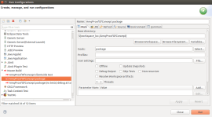
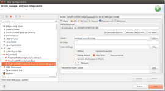

Active MQ Proof of Concept
This is a proof of concept blog about Active MQ using Tomee+ JMS, Servlet, Endpoint on the server
side, and Angular, JS web sockets on the client side. Java testing is done via JUnit, Mockito.
Javascript testing is done via Jasmine.
Let's first start out by describing the maven setup of the project...
1. Maven Compiler plugin (the usual) version 3.1 and the project requires JDK 1.7 and up:
<plugin>
<artifactId>maven-compiler-plugin</artifactId>
<version>3.1</version>
<configuration>
<source>1.7</source>
<target>1.7</target>
</configuration>
</plugin>
2. a) Jasmine Maven plugin simplifies integrating JS testing into maven test lifecycle goal
(Notice the executions tag):
<plugin>
<groupId>com.github.searls</groupId>
<artifactId>jasmine-maven-plugin</artifactId>
<version>1.3.1.5</version>
<executions>
<execution>
<goals>
<goal>test</goal>
</goals>
</execution>
</executions>
</plugin>
2. b) We add some custom configuration to Jasmine Maven plugin to support Angular testing with
a selenium chrome driver (angular-mocks helps with mocking the angular plumbing), and we have a
customized JS source directory (default is src/main/javascript):
<plugin>
<groupId>com.github.searls</groupId>
<artifactId>jasmine-maven-plugin</artifactId>
<version>1.3.1.5</version>
<configuration>
<webDriverClassName>
org.openqa.selenium.chrome.ChromeDriver
</webDriverClassName>
<preloadSources>
<source>${jquery.load.path}/jquery.js</source>
<source>${angular.load.path}/angular.js</source>
<source>${angular.load.path}/angular-mocks.js</source>
</preloadSources>
<jsSrcDir>${project.basedir}/src/main/webapp/js</jsSrcDir>
</configuration>
<executions>
<execution>
<goals>
<goal>test</goal>
</goals>
</execution>
</executions>
</plugin>
3. a) Last piece is a TOMEE maven plugin that helps with packaging/deploying to a TOMEE server and
starting debugging
<plugin>
<groupId>org.apache.openejb.maven</groupId>
<artifactId>tomee-maven-plugin</artifactId>
<version>1.7.1</version>
</plugin>
3. b) We add reload synchronization configuration to TOMEE maven plugin that automates hot code
deploy (Java, JS or HTML changes) to a TOMEE+ server at debug mode:
<plugin>
<groupId>org.apache.openejb.maven</groupId>
<artifactId>tomee-maven-plugin</artifactId>
<version>1.7.1</version>
<configuration>
<tomeeVersion>1.7.1</tomeeVersion>
<tomeeClassifier>plus</tomeeClassifier>
<synchronization>
<extensions>
<extension>.class</extension>
<extension>.js</extension>
<extension>.html</extension>
</extensions>
</synchronization>
<reloadOnUpdate>true</reloadOnUpdate>
</configuration>
</plugin>
4. Following maven dependencies are added to the project. Log4j is the usual logging library.
Javax servlet, websocket and JMS are needed for server-side setup. GSON is a JSON library.
JUnit, and mockito are needed for java testing. Jasmine and Selenium are needed for client-side
JS testing:
<dependencies>
<dependency>
<groupId>log4j</groupId>
<artifactId>log4j</artifactId>
<version>1.2.17</version>
</dependency>
<dependency>
<groupId>javax.servlet</groupId>
<artifactId>javax.servlet-api</artifactId>
<version>3.1.0</version>
</dependency>
<dependency>
<groupId>javax.jms</groupId>
<artifactId>javax.jms-api</artifactId>
<version>2.0.1</version>
</dependency>
<dependency>
<groupId>javax.websocket</groupId>
<artifactId>javax.websocket-api</artifactId>
<version>1.1</version>
</dependency>
<dependency>
<groupId>com.google.code.gson</groupId>
<artifactId>gson</artifactId>
<version>2.3.1</version>
</dependency>
<dependency>
<groupId>junit</groupId>
<artifactId>junit</artifactId>
<version>4.11</version>
<scope>test</scope>
</dependency>
<dependency>
<groupId>org.mockito</groupId>
<artifactId>mockito-all</artifactId>
<version>1.10.19</version>
<scope>test</scope>
</dependency>
<dependency>
<groupId>com.github.searls</groupId>
<artifactId>jasmine-maven-plugin</artifactId>
<version>1.3.1.5</version>
<scope>test</scope>
</dependency>
<dependency>
<groupId>org.seleniumhq.selenium</groupId>
<artifactId>selenium-chrome-driver</artifactId>
<version>2.3.1</version>
<scope>test</scope>
</dependency>
</dependencies>
Next, let's take a look at the client-side...
1) We will start out with HTML for the Producer page:

We include angular library at the head, and add angular app/controller JS at the bottom of HTML
body by convention. There is a simple form with a text area and submit button. Text area is
required for the form and the button is disabled unless the form text area has something in it.
On the bottom of the form, we have a small space for feedback from the server:
<!DOCTYPE html>
<html ng-app="producerApp">
<head>
<meta charset="ISO-8859-1">
<title>Producer</title>
<script
src="http://ajax.googleapis.com/ajax/libs/angularjs/1.3.14/angular.min.js"
></script>
</head>
<body>
<div ng-controller="producerCtrl">
<form name="produceForm" ng-submit="produce()">
<h2>Message</h2>
<p>
<textarea ng-model="message" name="message" rows="25" cols="40" required>
</textarea>
</p>
<p>
<button type="submit"
ng-disabled="produceForm.$pristine ||!produceForm.$dirty"
>Produce</button>
</p>
</form>
<div>{{feedback}}</div>
</div>
<script src="js/producerApp.js"></script>
<script src="js/producerCtrl.js"></script>
</body>
</html>
2) Next, let's take a look at HTML for the Consumer page:

Again, we include angular library at the head, and add angular app/controller JS at the bottom of
HTML body by convention. There is a simple read-only text area where messages we listen to will
show up:
<!DOCTYPE html>
<html ng-app="consumerApp">
<head>
<meta charset="ISO-8859-1">
<title>Consumer</title>
<script
src="http://ajax.googleapis.com/ajax/libs/angularjs/1.3.14/angular.min.js"
></script>
</head>
<body>
<div ng-controller="consumerCtrl">
<h2>Message(s)</h2>
<p>
<textarea ng-model="message" name="message" rows="25" cols="40" readonly>
</textarea>
</p>
</div>
<script src="js/consumerApp.js"></script>
<script src="js/consumerCtrl.js"></script>
</body>
</html>
3) Next, we move onto Angular.JS for the Producer page:
Here is the producer angular app:
/**
* Producer App
*/
var app = angular.module("producerApp", []);
...and the producer controller which talks to the JMS producer servlet to send the message and
get a feedback of message receipt:
/**
* Producer Controller
*/
app.controller("producerCtrl", function($scope, $http, $location) {
$scope.jmsMode = "PUBLISH_TO_TOPIC";
$scope.jpsUrl =
"http://localhost:"+$location.port()+"/_testing_/JPS/produce.do";
$scope.message = "";
$scope.feedback = "";
$scope.produce = function() {
$http.post($scope.jpsUrl, {
mode : $scope.jmsMode
,msg: $scope.message
})
.success(function(data, status, headers, config){
$scope.feedback = "Success: "+data;
})
.error(function(data, status, headers, config){
$scope.feedback = "Error: "+data;
});
};
});
4) On the consumer client side we have the following Angular.JS:
The consumer app:
/**
* Consumer App
*/
var app = angular.module("consumerApp", []);
...and the consumer controller that establishes a web socket connection to the message consumer
server endpoint to listen to any messages:
/**
* Consumer Controller
*/
app.controller("consumerCtrl", function($scope, $location) {
$scope.endpointUrl =
"ws://localhost:"+$location.port()+"/_testing_/endpoint";
$scope.message = "";
var webSocket = new WebSocket($scope.endpointUrl);
webSocket.onerror = function (event) {
$scope.message = event.data;
$scope.$apply();
};
webSocket.onopen = function(event) {
webSocket.send("Connected");
};
webSocket.onmessage = function(event) {
if (event && event.data) {
var jsonObj = JSON.parse(event.data);
$scope.message = $scope.message + '\n'
+ jsonObj.timeStamp + ': '+ jsonObj.msg;
$scope.$apply();
}
webSocket.send("listen");
};
$scope.$on('$destroy', function() {
webSocket.close(); //Close web socket connection
});
});
Now, for the server-side...
1) The JMS producer servlet is a simple servlet that defines a JMS topic and a connection factory
resources (via TOMEE+ injection binding).
public final class JmsProducerServlet extends HttpServlet {
...
@Resource(name = "foo")
private Topic fooTopic;
@Resource
private ConnectionFactory jmsConnFactory;
...
On a POST from the client side:
@Override
protected void doPost(HttpServletRequest req, HttpServletResponse resp)
throws ServletException, IOException
{
...
a) Creates/starts a JMS connection
jmsConn = jmsConnFactory.createConnection();
jmsConn.start();
b) Creates a JMS session (no transaction, auto acknowledge message sent)
jmsSession =
jmsConn.createSession(false,Session.AUTO_ACKNOWLEDGE);
c) Parses the JSON request (via Gson) to extract message to be sent
final Request jsonReq =
gson.fromJson(req.getReader(), Request.class);
d) Creates a non-persistent message producer for the JMS topic
final MessageProducer producer =
jmsSession.createProducer(fooTopic);
producer.setDeliveryMode(DeliveryMode.NON_PERSISTENT);
e) Creates/sends the JMS message envelope and put the message in that was extracted
// Create a message
final TextMessage message = jmsSession.createTextMessage(msg);
// Tell the producer to send the message
producer.send(message);
f) Returns a feedback to caller
//Write back ack to response
pw.println(SUCCESS_MSG);
2) The JMS consumer server endpoint also utilizes TOMEE+ binding to create the same JMS topic by
name and a connection factory resource:
@ServerEndpoint(value = "/endpoint")
public final class JmsConsumerServerEndPoint {
...
@Resource(name = "foo")
private Topic fooTopic;
@Resource
private ConnectionFactory jmsConnFactory;
...
a) On a web socket open request from the client-side:
@OnOpen
public void onOpen(final Session session) {
It creates/starts a JMS connection and session (again no transaction,
auto acknowledge message receipt):
jmsConn = jmsConnFactory.createConnection();
jmsConn.start();
jmsSession =
jmsConn.createSession(false, javax.jms.Session.AUTO_ACKNOWLEDGE);
b) On a web socket request to listen:
@OnMessage
public String onMessage(final String message, final Session session) {
...
switch (message) {
case "listen":
It creates a JMS consumer of the topic and waits to receive the message:
// Create a MessageConsumer from the Session for the Topic or Queue
final MessageConsumer consumer =
jmsSession.createConsumer(fooTopic);
// Wait to receive the message
final Message msg = consumer.receive();
When there is a JMS message to be consumed, it wraps it up into a JSON response and
sends it back to the client:
...
else if (msg instanceof TextMessage)
{//Send back msg text to response
resp = new Response((TextMessage)msg);
}
...
return new Gson().toJson(resp);
c) It is a good idea to clean up the JMS resources on closing of the web socket:
@OnClose
public void onClose(final Session session, final CloseReason closeReason) {
...
try {
if (session.isOpen()) {
session.close();
}
if (jmsSession != null) {
jmsSession.close();
}
if (jmsConn != null) {
jmsConn.stop();
jmsConn.close();
}
}
catch (JMSException | IOException e) {
logger.debug("Problem closing resources", e);
}
}
How about some Java Unit Testing...
1) We utilize mockito annotations to mock out the JMS communication portion of the JMS producer
servlet to test the behavior:
@RunWith(MockitoJUnitRunner.class)
public class TestJmsProducerServlet {
@Mock(name = "jmsConnFactory")
private ConnectionFactory mockJmsConnFactory;
@InjectMocks
private JmsProducerServlet servlet;
@Mock
private HttpServletRequest mockReq;
@Mock
private HttpServletResponse mockResp;
@Mock
private Connection mockJmsConn;
@Mock
private Session mockJmsSession;
@Mock
private MessageProducer mockProducer;
...
@Before
public final void beforeTest() throws Exception {
Mockito
.when(mockJmsConnFactory.createConnection())
.thenReturn(mockJmsConn);
Mockito
.when(mockJmsConn.createSession(
Mockito.anyBoolean(), Mockito.anyInt()))
.thenReturn(mockJmsSession);
Mockito.when(mockJmsSession.createProducer(
Mockito.any(Destination.class)))
.thenReturn(mockProducer);
}
...
2) Same goes for the JMS consumer endpoint:
@RunWith(MockitoJUnitRunner.class)
public class TestJmsConsumerServerEndPoint {
@Mock(name = "jmsConnFactory")
private ConnectionFactory mockJmsConnFactory;
@InjectMocks
private JmsConsumerServerEndPoint endPoint;
@Mock
private Session mockSession;
@Mock
private MessageConsumer mockConsumer;
...
How about some Javascript Jasmine Testing...
We utilize angular-mocks.js to mock out the angular client/server communication:
/**
* Testing client-side producer
*/
describe('Producer Controller', function() {
var $httpBackend, $rootScope, createController;
beforeEach(module('producerApp'));
beforeEach(inject(function($injector) {
// Set up the mock http service responses
$httpBackend = $injector.get('$httpBackend');
// Get hold of a scope (i.e. the root scope)
$rootScope = $injector.get('$rootScope');
// The $controller service is used
//to create instances of controllers
var $controller = $injector.get('$controller');
createController = function() {
return $controller('producerCtrl'
, {'$scope' : $rootScope });
};
}));
afterEach(function() {
$httpBackend.verifyNoOutstandingExpectation();
$httpBackend.verifyNoOutstandingRequest();
});
Here is a test of the post the message to producer servlet:
it('should send a successful post message to JMS Producer Servlet (JPS)', function() {
var testToken = 'TESTING!!';
$httpBackend.expectPOST(testToken
, {mode : testToken, msg: testToken})
.respond(testToken);
createController();
$rootScope.jmsMode = testToken;
$rootScope.jpsUrl = testToken;
$rootScope.message = testToken;
$rootScope.produce();
$httpBackend.flush();
expect($rootScope.feedback)
.toEqual("Success: "+testToken);
});
You can git this project at here
You can download a compressed version of the whole project
here.
How do you run it? Depends on the IDE, I use Eclipse maven launcher to package it:

... and here is my launcher to start TOMEE+ in debug mode
(listening to any changes in source code to reload):

Posted by Ozgur Amac